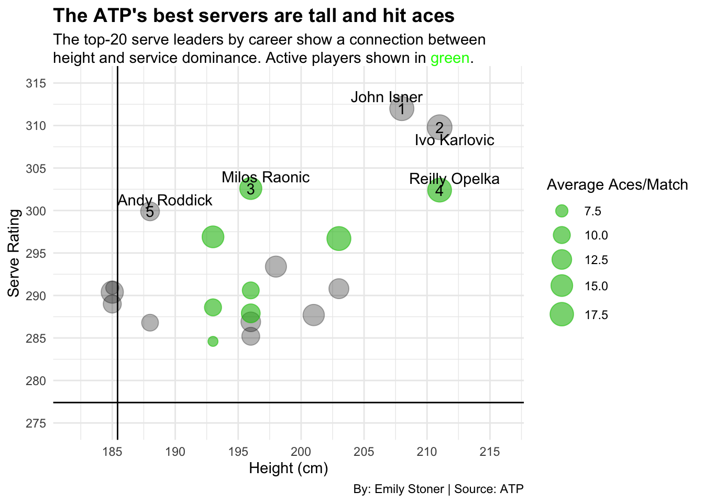

Code
library(tidyverse)
library(ggplot2)
library(ggrepel)
library(patchwork)
library(gt)
library(ggtext)
library(ggalt)Emily Stoner
December 8, 2024
The top ATP players represent the best of the best in men’s tennis at any given time. However, aside from their technique, practice methods and coaching, there are other factors that impact these players success and strengths as well.
On of the best American tennis players was John Isner. Isner also sits comfortably as one of the best service opponents, and happens to be 6’11”. As I started to look into the other names and stats of top servers, it seemed like height may have something to do with it.
From a logical perspective, being taller would help with parts of the typical serving mechanism, although what about kids serving? Height doesn’t make or break serving ability. I wanted to look into these questions with a bubble chart comparing height and service results. The reference lines display the ATP median for serve rating in the top-100 (277.4), and average height (185.4 cm), while the numbers show the player’s standing in serve rating.
ggplot() + geom_vline(xintercept = 185.42) +
geom_hline(yintercept = 277.4) +
geom_point(
data = Serve,
aes(
x = HeightCM,
y = ServeRate,
size = AvgAcePMat
),
alpha = .3
) +
geom_point(
data = ServeActive,
aes(x = HeightCM, y = ServeRate, size = AvgAcePMat),
alpha = .4,
color = "green") + geom_text(
data = ServeFive, aes(x = HeightCM,
y = ServeRate, label = No)) + geom_text_repel(
data = ServeFive,
aes(
x = HeightCM,
y = ServeRate,
label = Player
)) + scale_x_continuous(breaks = c(185, 190, 195, 200, 205, 210, 215), limits = c(182, 216)) +
scale_y_continuous(breaks = c(275, 280, 285, 290, 295, 300, 305, 310, 315), limits = c(275, 315)) +
scale_size(range = c(3, 8), name = "Average Aces/Match") + labs(
x = "Height (cm)", y = "Serve Rating",
title = "The ATP's best servers are tall and hit aces",
subtitle = "The top-20 serve leaders by career show a connection between\nheight and service dominance. Active players shown in <span style = 'color:green;'>green</span>.", caption = "By: Emily Stoner | Source: ATP"
) + theme_minimal() +
theme(
plot.subtitle = element_textbox_simple(),
plot.title = element_text(size = 14, face = "bold")) 
These top-20 servers are tall. All but three are above average in height, not to mention three of the top five are over 20 cm taller than the average. Serving objective is very involved with strategy and style, so the number of aces hit in a match isn’t entirely indicative of service dominance, however, it just so happens that of the top-20 in serve rating, over half (11) also appear in the top-20 for aces per match. You can be a great server without a high ace ability, but if you’re hitting aces, you’re probably a decent server. In conclusion, being tall means you’ll probably be better at serving, or at least most of the best servers are tall.
But many tennis legends and greats weren’t in that top-20 list. After all, the serve doesn’t matter all that much if you can’t win a point. Although, we do have three former No. 1’s in our top-20 servers list. What about Rafa Nadal? The King of Clay? He was dubbed as such because of his dominance on the surface, winning 90.4% of his matches on clay, earning him 63 titles on clay.
Surface success and strength is the next component to investigate. While, once again, learning how to succeed with this variable takes skill, surface is an inevitable part of pro tennis that ATP’s best has to work with. While some young stars like Carlos Alcaraz have already won grand slams on every surface, other professionals like Casper Ruud are vocal about their surface preferences (he’s played nearly 200 matches on both hard and clay courts, but a whopping 12 on grass). Instead of using ATP rankings to look into surface leaders, I’ll be using under pressure rating (UPR) leaders as the group we take a closer look at. These players capitalize on break points and succeeding to win break points and the sets that matter most. It’s no coincidence these names are some of the best in the sport. The under pressure metric displays mindset, technique and dominance, which can all be impacted by surface. These guys can handle a challenge on any surface, but here’s how their wins chalk up, grouped by surface, arranged by UPR.
SurfaceBar <- Surface |> select(No, Player, UPRate, "Hard Court Wins", "Grass Court Wins", "Clay Court Wins", CarWLPct) |> pivot_longer(
cols = ends_with("Wins"),
names_to = "Type",
values_to = "Wins"
)
ggplot(
SurfaceBar,
aes(
x = reorder(Player, -No),
weight = Wins,
fill = Type)) +
geom_bar() +
coord_flip() + labs(
x = "Player", y = "Wins, by court type",
title = "Under pressure leaders persist on all surfaces,\nbut the most wins come on hard court",
subtitle = "These players lead the ATP in UPR, but they have a range of\nsuccess depending on surface.", caption = "By: Emily Stoner | Source: TennisAbstract.com and ATP"
) + theme_minimal() +
theme(
plot.title = element_text(size = 14, face = "bold")) I will note; with two of the four grand slams being played on hard court, it makes sense that players are racking up hard court wins. But none the less, the stacked bar chart shows that even the best have strengths and weaknesses. Grass courts seem to be the weakest link for these players. This could be due to the maintenance grass courts demand, but overall, the tennis world doesn’t really prioritize grass season like they do clay and hard.
Before tennis players start worrying about how tall they’ll be or which surface will be their best, they start playing tennis. The racquet is of course an essential piece of equipment for the sport, and the grip, or the way a player holds the racquet is not as standard as one may think. A forehand will be either right- or left-handed, and a backhand will be one- or two-handed. How a player will grow up training in terms of grip will depend on personal preference, or maybe their coach, but I want to see if it matters in the rankings.
While some people write with their left hand and do everything else with the right, BBC says only 10% of the world’s population is left-handed. However, according to TennisAbstract.com’s list of lefties, 14.5% of the top-200 ATP players are lefties, ranked as high as 14. Looking at the choice between one- or two-handed backhand, to my knowledge nearly every coach is going to tell you to do a two-handed backhand. But there’s 16 pros in the top-200 that have made it pretty far doing otherwise, including three players in the top-20.
Instead of looking at players in the 100s and 200s though, I want to look at the current top-15. Rankings will be ever-changing, but with the conclusion of the 2024 ATP season, now is a great time to take a look at the leaders of the tour. To vizualize this, we’re going to look at the top-15’s hand choice, how they perform against righties versus lefties via dumbell chart, and how the choice of backhand grip does or doesn’t impact a player’s backhand winner success.
ggplot() +
geom_dumbbell(
data=Grip,
aes(y=reorder(Player, -No), x=vR, xend=vL),
size = 2,
colour = "grey",
colour_x = "green",
colour_xend = "blue" ) + geom_dumbbell(
data=Lefties,
aes(y=reorder(Player, -No), x=vR, xend=vL),
size = 2,
colour = "black",
colour_x = "green",
colour_xend = "blue" ) +
labs(
x="Winning percentage",
y="Player, by ATP rank",
title="The top-15 are inconsistent in winning\ndepending on the opponent's dominant hand",
subtitle = "Righties have <span style = 'color:grey;'>grey</span> bars, lefties have black bars. Win rates against <span style = 'color:green;'>righties</span> are shown in green, against <span style = 'color:blue;'>lefties</span> are shown in blue. Hand choice impacts opponents very differently.", caption = "By: Emily Stoner | Source: TennisAbstract.com and ATP") +
theme_minimal() +
theme(
plot.subtitle = element_textbox_simple(),
plot.title = element_text(size = 14, face = "bold"))Again, it’s always more complicated than the stats show. Opponents are more or less skilled, have different strengths, weaknesses, etc. But this chart shows that the top-15 is really all over the place when it comes to success against opponents based on their dominant hands. Nine of the 15 perform better against righties, including the two lefties. Casper Ruud is nearly unaffected by his opponent’s dominant hand. Fritz and Rune probably don’t have a preference either. But Zverev has an impressive 80.5% win rate against lefties, while Draper has terrible odds against other lefties. Overall, maybe an opponents dominant hand has an impact on aopponent, but clearly it varies player to player. It could be differences in training, mindset, or shot selection that lead to this, but whatever it is, this chart really surprises me.
One last chart: one- versus two-handed backhand winners. This player/coaching preference may not make much of a difference at lower levels, but the players that opt for one-handed backhands in the ATP are few.
ggplot() +
geom_bar(
data = Grip,
aes(x = reorder(Player, -No), weight = BHWPct), fill = "grey") + geom_bar(
data = OneHandB,
aes(x = reorder(Player, -No), weight = BHWPct), fill = "blue") + coord_flip() + labs(
x="Player, by ATP rank",
y="Backhand winner percentage",
title="One-handed backhanders can't match two-handers' winners",
subtitle = "Backhand winners are rare, but they're even more rare for the few one-handed backhanders in the ATP top-15.", caption = "By: Emily Stoner | Source: TennisAbstract.com and ATP") +
theme_minimal() +
theme(
plot.subtitle = element_textbox_simple(),
plot.title = element_text(size = 14, face = "bold"))It’s hard to hit a winner with your backhand, but our two one-hand backhand guys are kind of at the back of the pack. Clearly this grip choice doesn’t hinder their game in a monumental way; these two guys are top-15 in a massive, competitive sport, but it is interesting to once again see how the things we don’t have maybe as much control or focus on can still impact performance patterns.
All data is reflective of standings at the conclusion of the 2024 ATP season.